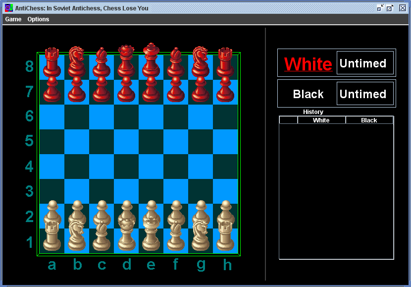

Contents:
Antichess is most easily explained if one already knows the rules to chess. If you are unfamiliar with how pieces move or how chess is played, you should visit: http://en.wikipedia.org/wiki/Chess#Rules or perhaps http://www.princeton.edu/~jedwards/cif/chess.html and read up on the rules. Chess is a lot of fun and learning the rules will prevent you ever from needing to explain to people why you don't know the rules.
There are many versions of Antichess with a large variety of rule sets. The following rules are the rules that the program follows. All of the pieces move the same is in normal chess (this includes castling and en passant). If pawns advance to the other side they automatically become queens. There is no selection process.If a piece in Antichess can take another piece, it must. If there are multiple legal moves available to a player that result in a capture, any are acceptable.
The forced capture rule does not strictly hold if a player's king is in check. If player A's it's player A's turn then these are the rules he must follow:
Getting the king out of check overrides the rule of being forced to capture. If a capture is available while getting out of check that is forced.
Players can either be untimed or timed. If a player is timed then he starts the game with a timer having a certain amount of time on it, 4 minutes let's say. Whenever it is this players turn the timer is counting down. If it reaches zero the player has lost.
Player A wins the game against player B if:
If player A checkmates player B and on the same turn takes the last of player B's non-king pieces, player A wins (ie, the checkmate prevails).
If a player cannot make a legal move and none of the end conditions have been met for the game that players turn is skipped
For a slightly less terse explanation of the Antichess rules feel free to visit http://www.mit.edu/~6.170/assignments/antichess/antichess.html#antichess_rules.
Largely borrowed from the provided specifications
The TextUI supports one flag when calling it from the console. If it is called with '-s' the command ShowBoard is enabled.
All of the time while executing the TextUI is spent in the interactive loop. After running the program you should be greeted with an empty line that you can input commands into. The supported commands for the TextUI are:Format: StartNewGame [player] [time] [player] [time]
Each player is denoted as "human" or "computer." The times specified are the initial "time remaining" for the player, in milliseconds. If a time argument is zero, then the playing time is unlimited. The first player is white and the second player is black. For example, StartNewGame computer 60000 human 180000 should start a new game with the computer playing as white and the human playing as black. The computer will have 1 minute to make all of its moves, and the human will have 3 minutes. The system will output New game started on its own line.
Format: SaveGame [filename]
The system will save the game to the given filename and report 'Game saved' on its own line. If one player is untimed and one player is timed the game is saved as if both players were untimed.
Format: SaveGame [filename]
The system should load the game from the given filename. Once the files is loaded, it will print 'Game loaded' on its own line. It will report 'Corrupt file' if the file does not have a correct format. The players of the loaded game (computer or human) are determined by the players of the current game. So if right now white is human and black is computer then with the loaded game white will be human and black will be computer controlled. If no game has been started it will automatically load as a human vs. human game.
Format: GetNextMove
If this command is called during a human player's turn, the command prints 'Human turn' on its own line. If this command is called during a machine player's turn, print on its own line the next move it believes to be the best. The printed move should be in the standard move format The time taken to compute the move will be subtracted from the computer player's game clock. If called repeatedly, this should return the same move over and over without further decrementing the computer's time remaining.
Format: MakeNextMove
If it is a human player's turn, the system should print 'Please specify human move' on its own line. If it is the computer player's turn, and GetNextMove has not yet been called on this turn, then the system should print 'First GetNextMove'. Otherwise, the system performs the move that GetNextMove would return.
Format: MakeMove [move] [time]
Perform the move specified by the move string, in the standard move format. The time parameter is specified in milliseconds. This command should only be used by a Human Player. If it is used during a computer player's turn, nothing will happen to the game state and no response should be printed. If the move is not legal, the system should print, on its own line, 'Illegal move' and not perform the move. If the move is legal, the system will perform the move, decrement the player's time by the amount given, and print the move performed, in proper format, on its own line. If the player's time is unlimited, then the time argument is ignored (but must still be present).
Format: PrintBoard
System should print the current "state" of the game to the screen using the same format as if it were being saved to a file. The output should end with (at least one) a newline.
Format: LegalMove [move]
System will print, on its own line, either "legal" or "illegal" to specify if the move is a legal next move.
Format: PrintAllMoves
System will, in alphanumeric order, print all legal moves for the next player. Each move should each appear on its own line.
[player] On its own line, the system should print the time remaining in milliseconds for the player specified. For example GetTime white, should print 3000 to indicate 3 seconds left for the white player. If the time for the player is unlimited, the system should print "unlimited".Format: GetTime [player]
On its own line, the system should print the time remaining in milliseconds for the player specified. For example GetTime white, should print 3000 to indicate 3 seconds left for the white player. If the time for the player is unlimited, the system will print "unlimited".
Format: ShowBoard
The system will print off a ascii art representation of the board. Note that this is only available if TextUI is called with the '-s' flag.
Format: QuitGame
Prints (on its own line) Exiting game and terminates the present game and application.
GetNextMove may take no more than ten seconds more than the player's time remaining to complete; if it exceeds the player's time remaining it must report a human victory. When a player has won the game, output on its own line: [Player color] Player has won. For example, if the black player has won, output: Black Player has won. At this point, only the beginning subset of commands will be available though QuitGame will also be available.
If the user input does not match one of these commands, output Input error alone on one line. Also, the first valid command entered must be either StartNewGame or LoadGame, or else Input error is printed.
We define a standard string format for a chess move. The string should be 5 characters long. The first two characters represent the square where the piece began, the third character is a dash (-), and the next two characters represent the square where the piece moved to.
<move-desc> ::= <position>-<position> <position> ::= <col><row> <col> ::= a | b | c | d | e | f | g | h <row> ::= 1 | 2 | 3 | 4 | 5 | 6 | 7 | 8
So a move would be structured in the format e2-e4. Which as an opening move would advance the white pawn above the king. The rows and columns are arranged like this:
There is also a GraphicUI for playing chess or antichess.
Antichess will automatically start with a new game To start a new game click the Game button on the menu bar and select New Game. We can also press Ctrl-N to open the New Game window. A new game window should open up.
From this window you can select whether we want white and black computer controller or controlled by a human. We can also select the times each has for a game. One can also select what type of game we want to play. Chess follows typical Chess Rules. Antichess follows the Antichess rules described above. Once we are happy with the selection press New Game. If we decide we do not want to start a new game press cancel. If it is a timed game the timer will start running so be ready.
When starting Antichess, we should be greeted with a screen that looks like this:
It will start out as whites turn. Whose turn it is is indicated by the label in the upper righthand corner of the screen. The larger, underlined, red name is the player who can currently make moves. A move history is displayed on the bottom right. The format for the moves outputed is the standard move format. The most recent move is highlighted in red.
If it is a humans turn, moves are made by selecting a piece via clicking on it and then click on a destination. If the move is a legal move for the current game is is performed. If it is a computer players turn then computer will calculate a legal move and automatically perform it. When we select a piece the square it is on is highlighted by a dark blue square. There is an option to highlight in green all the squares that are legal moves for the selected piece. That option is on by default. We can only select pieces if it is taht players turn and that player is controlled by a human. The following screen is what it looks like after a white queen is selected:
In Antichess many pieces often do not have any legal moves because one piece is forced to take another piece. Also because the movement of pieces happen instantly we have the ability to highlight the pieces that have legal moves and to highlight the beginning and end squares from the previous move. To activate these hold down the spacebar. The last move is highlighted in orange. The pieces with available moves are highlighted in green. These are only highlighted while the spacebar is pressed.
If end conditions are met for the current game (these are different for chess and antichess and are either described in the rules above in the case of antichess or on the internet in the case of chess) a window pops up stating who won and the chessboard now displays text stating the winner of the game. We can end the game early by selecting game in the window in the menu bar and then pressing end game.
In the middle of an Antichess game we can save the game to a file on the harddrive. To do this select Game on the menu bar and then select save game. Then simply select a file.
We can load a game at any time. To do this simply select Game and then select Load new Game. Select the file we wish to load. It then will bring up a menu where we can select whether we want white and black controlled by humans or the computer. When we are happy with the selection we hit load game and the new game should be loaded. If the file is corrupt or is not a proper save file the game that was running when attempting to load will continue to play. Note that saving and loading are only available if we are currently playing Antichess. If we try to save a game while playing chess it will do nothing. If we try to load a game while playing chess, the game started will be Antichess.
OptionsHere is a picure of the Options menu:

If you ever feel sad, hold 'H'